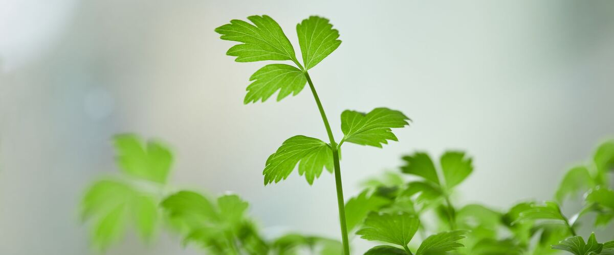

When to plant parsley in Ephrata and Quincy, WA
Plant parsley in the garden in Ephrata and Quincy Apr 1 – May 20, either as seeds or as young plants started indoors Feb 4–18.
- Difficulty
- Easy
- Sun
- Full sun to part shade
- Spacing
- 8 inches apart
- Planting depth
- ¼ inch deep
- Frost
- Handles light frost
- First harvest
- About 75 days after planting
Why these dates
Ephrata and Quincy's typical last spring frost is April 22. As a cool-season crop that handles light frost, this crop doesn't need to wait for that date. In the Columbia Basin and low eastern valleys, though, the soil usually isn't ready to work until about April 1.
Columbia Basin and low eastern valleys. Hot, dry summers and quick spring warm-up. Warm crops go in earlier than west of the Cascades, and irrigation matters more than rain.
How to grow parsley in Ephrata and Quincy
- Start seeds indoors Feb 4–18 in trays or small pots under a grow light or in your sunniest window. Or skip this step and buy young plants (starts) at a garden center.
- Harden off the young plants: about a week before planting, set them outside for a few hours a day, a little longer each day.
- Plant them in the garden Apr 1 – May 20, 8 inches apart. If you plant seeds instead, sow them ¼ inch deep.
- Water deeply once or twice a week rather than a little every day, and mulch once the soil is warm.
- Harvest: Cut outer stems at the base and let the center keep growing.
Key numbers
- 50–85°FSoil to sprout
- 2–4 weeksDays to sprout
- 6.0–7.0Soil pH
- Two years (biennial)Life span
Growing notes
What makes the difference in Northwest gardens, in plain language.
Soil, sowing and slow sprouting
Parsley likes rich, moist, well-drained soil with a pH of about 6.0 to 7.0. Its seeds contain natural compounds that slow sprouting, which is why they can take three weeks or more to come up. Soaking seeds overnight in warm water helps, and so does keeping the soil surface damp the whole time. Many Northwest gardeners skip the wait and buy young plants. Feed lightly with compost or a balanced fertilizer, and water during dry spells.
Why parsley flowers in its second year
Parsley is a biennial. It grows leaves the first year, survives winter, then sends up a flower stalk the next spring and finishes. West of the Cascades, plants often keep going through a mild winter and give you fresh leaves into early spring. Once they bolt, the leaves get tough and bitter, so sow or plant fresh parsley each spring. East of the Cascades, colder winters may kill plants outright, so mulch them or treat parsley as an annual.
Pests and harvest
Parsley is mostly trouble-free. You may find striped green and black caterpillars on it: those become swallowtail butterflies, and many gardeners plant a little extra to share. Slugs can chew young plants in wet weather. Harvest by cutting outer stems at the base and letting the center keep growing. Flat-leaf types like Italian Flat Leaf and Giant of Italy have stronger flavor for cooking, while Moss Curled is the frilly garnish type. Store stems in water in the fridge, or freeze chopped leaves.
Common questions
When is the last frost in Ephrata and Quincy, WA?
Typically April 22. In 9 years out of 10, frost is over by May 6. These are 1991–2020 NOAA climate normals for Ephrata Municipal Airport.
Is it too late to plant parsley in Ephrata and Quincy?
The spring planting window runs through May 20. Later plantings tend to struggle in summer heat.
When should I start parsley from seed indoors in Ephrata and Quincy?
February 4 to February 18, which is 8 to 6 weeks before the April 1 planting date. Or buy young plants at a garden center instead.
Why won't my parsley seeds sprout?
Parsley is naturally slow, often taking two to four weeks. Soak seeds overnight and keep the soil constantly moist, since a dry crust stops them. If you need it sooner, buy young plants.
Does parsley come back every year?
Not exactly. Parsley lives two years, flowering and dying in its second summer. West of the Cascades it often lasts through winter, but plant new parsley each spring for a steady supply.
What are the caterpillars eating my parsley?
Green caterpillars with black stripes and yellow dots are usually swallowtail butterfly larvae. They rarely eat enough to harm a healthy patch. You can move them to a spare plant if you want to save your harvest.
Also plant in Ephrata and Quincy around the same time
Planting dates for parsley in nearby areas
- Yakima, WA Apr 10 – May 29
- Tri-Cities (Pasco, Kennewick, Richland), WA Apr 1 – May 20
- Walla Walla, WA Apr 1 – May 20
- Moses Lake, WA Apr 1 – May 20
- Ellensburg, WA Apr 15 – Jun 3
- Sunnyside, Grandview and Prosser, WA Apr 3 – May 22
Full planting calendar for Ephrata and Quincy · Parsley in every city